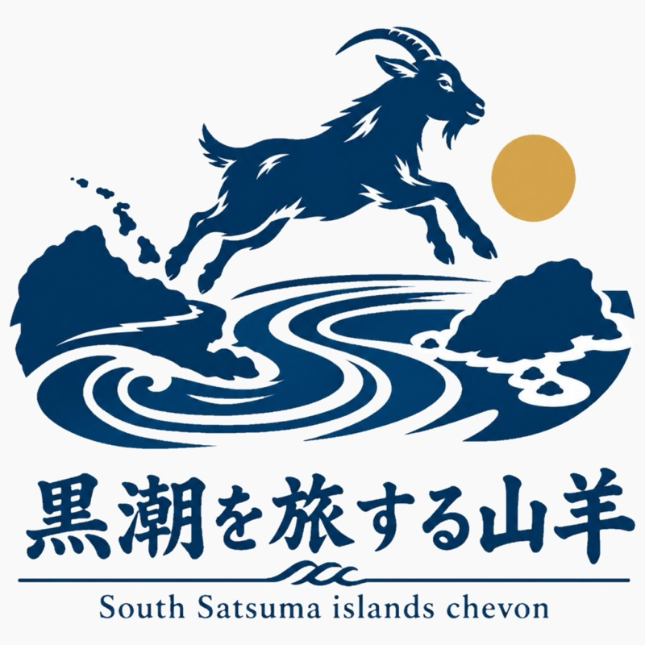

お買い上げありがとうございます。
このジャーキーのヤギは、
海を渡ってきました。
トカラ列島から奄美大島へ。
鹿児島と奄美のあいだに連なる、トカラ列島（十島村）。黒潮が流れるこの島々で、昔から人と一緒に暮らしてきた小さなヤギが「トカラヤギ」です。
小さな体、粗食に耐える強さ、険しい島を歩きまわる力。いまの家畜には少なくなった姿が、島のヤギには残っています。
いま島では、人の手を離れて野生化したトカラヤギが増えすぎています。畑の作物や島の草木が食べられ、土が流れ出すなど、島の自然に影響が出ています。
そこで、島で捕まえたヤギを、ヤギを食べる文化が根強い奄美大島で育て、おいしいヤギ肉として届ける取り組みを始めました。食べてもらうことが、島の自然を守ることにつながります。
ヤギ肉特有の香りが苦手な人や、はじめての人にも食べやすい味わい。
昔ながらのヤギ肉らしい香りと風味をしっかり楽しめる味わい。
らいおんの穴（奄美大島）
連絡先は確認中